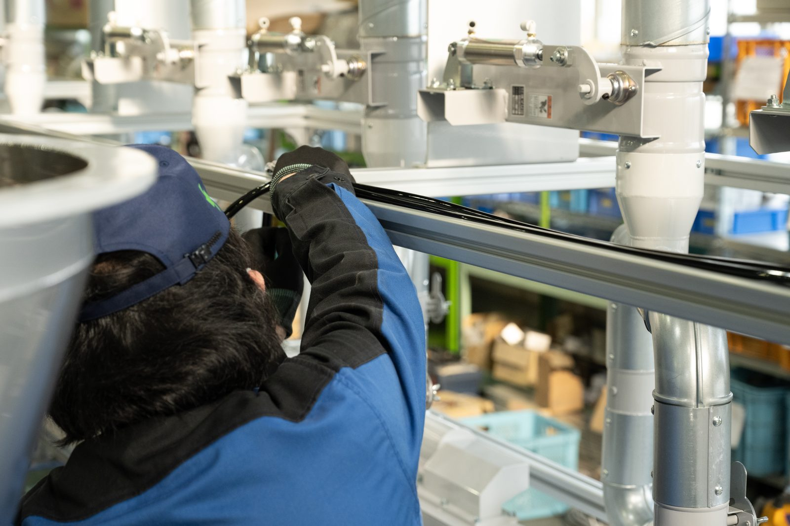
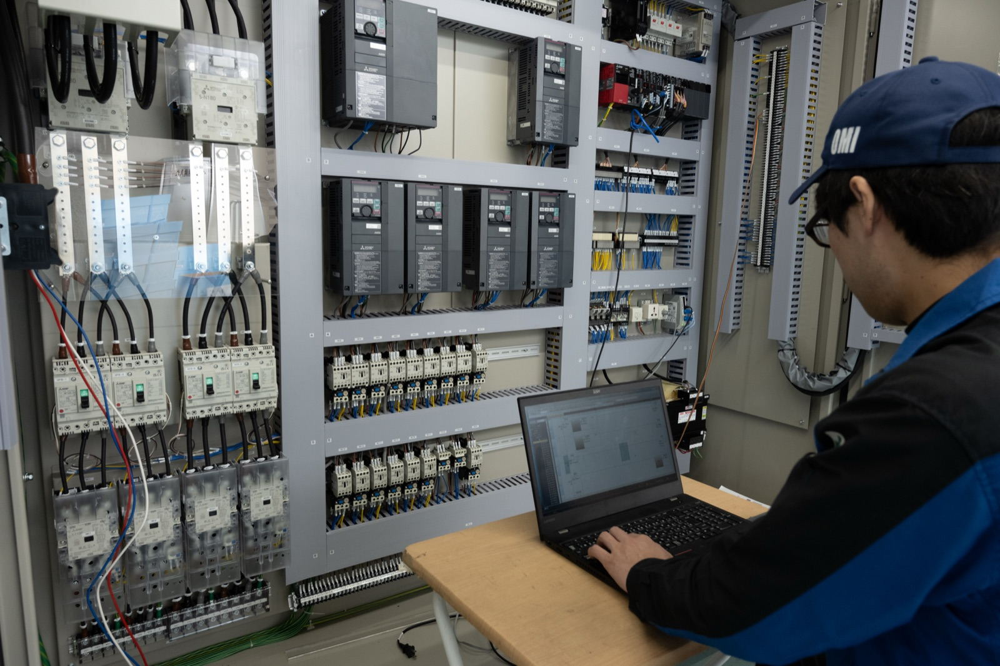
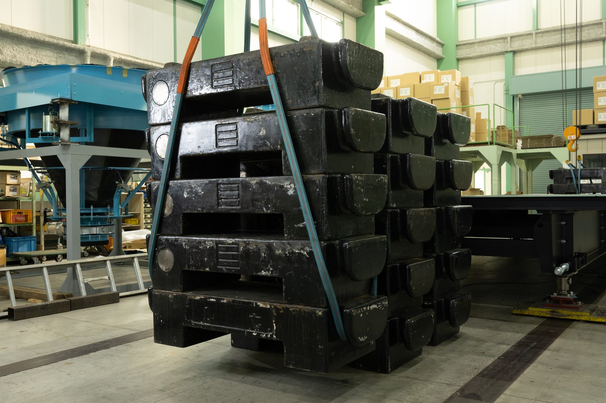
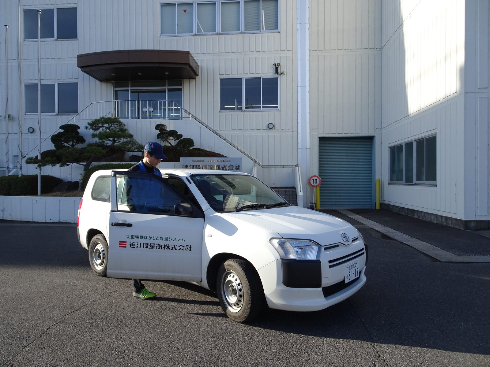
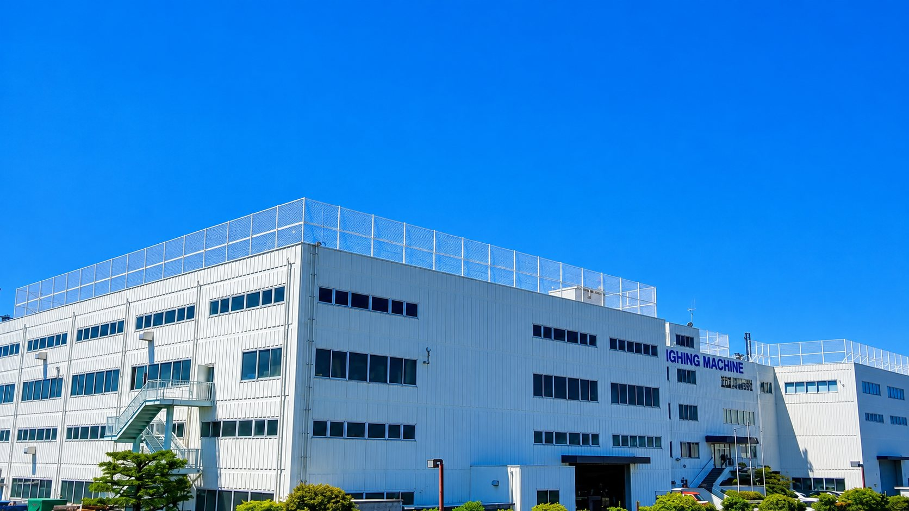
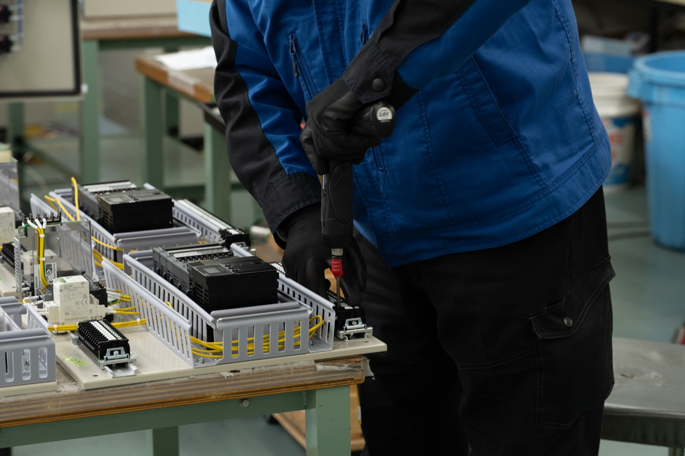

PHOTO SHOOTING GUIDE
2026年9月20日公開予定のWebサイトに掲載する写真の撮影指示書です。カメラマンの方と、被写体となる社員の皆さま・各営業所のご担当者の双方にご覧いただく前提でまとめています。
01
サイト全体のテーマは「いきる」をはかり、豊かな世界へ。126年にわたり社会の基盤を支えてきた技術力と、そこで働く人の誠実さを、写真で伝えることが目的です。
02
サイト上では写真の上に文字が乗ったり、画面サイズに応じて左右・上下が切り落とされます。下図の考え方で撮っていただけると、どのページでも使い回せます。
03
優先度Aは掲載が確定している必須カットです。時間の都合で削る場合はCから外してください。
| 優先 | カット | 内容・ポーズ | 枚数目安 | 掲載先 |
|---|---|---|---|---|
| 代表撮影 | ||||
| A | 代表ポートレート（正対） | 上半身。正面やや斜め、視線はカメラへ。背景は執務室または工場。表情は自然な微笑み程度 | 3〜5 | 会社案内／代表挨拶 |
| A | 代表ポートレート（引き） | 膝上〜全身。背景の空間を広く。文字を乗せるため片側を空ける | 2〜3 | トップ／採用 |
| B | 代表・オフショット | 視線を外した横顔、現場を見ている後ろ姿など | 2〜3 | 予備 |
| 社員インタビュー（7名／お一人あたり10〜15分） | ||||
| A | ポートレート（上半身） | 正面やや斜め、視線はカメラへ。背景は所属部署の現場。腕組みなどのポーズは不要、自然体で | 3〜5 | 採用／社員紹介 |
| A | 作業中の様子（引き） | 実際の業務を行っている場面。カメラを意識しない自然な表情。周囲の空間も入れる | 3〜5 | 採用／社員紹介 |
| A | 手元の寄り | 工具・端末・図面・製品などを扱う手元。顔は入らなくて構いません | 2〜3 | 採用／記事内 |
| B | 同僚とのやりとり | 打ち合わせ・指差し確認など2〜3名の場面。会話の自然な流れを | 2〜3 | 採用／職場環境 |
| C | 職場の引き | その方が働くフロア・ライン全体 | 1〜2 | 予備 |
| 現場・製品 | ||||
| A | 本社・工場の外観 | 順光の時間帯に。正面と斜めから。空を広めに入れる | 3〜5 | トップ／会社案内 |
| A | 製造ライン全景 | 組立中の設備を含む工場内の引き。人が入っていると尚可 | 5〜8 | トップ／製品・技術 |
| A | 制御盤・電装作業 | 配線・盤の中・PCでの調整など。技術力が伝わる寄り | 3〜5 | 製品・技術／サービス |
| B | 検査・計量の場面 | 分銅・センサー・計測器を扱う場面 | 3〜5 | サービス案内 |
| B | 出荷・搬出 | 梱包、トラックへの積み込み、社用車 | 2〜3 | サービス案内 |
| C | ディテール | 銘板、社章（三本線）、工具、図面など | 5〜 | 各所のアクセント |
04
すでにご提供いただいている写真のなかから、方向性が近いものを挙げます。これに寄せていただく必要はありませんが、光の入り方・寄りの距離感の目安としてご覧ください。

作業中の様子（引き）手前に作業者、奥に設備。周囲の空間が入っている

制御盤・電装作業技術が伝わる寄り。人の手と機器を一緒に

検査・計量の場面設備そのものを主役にした引き

出荷・現場対応社用車と人。屋外の順光

外観空を広く。順光の時間帯に

手元の寄り顔が入らなくても成立するカット
05
構えていただく必要はありません。普段どおりに作業していただくのがいちばんです。以下だけご協力をお願いします。
06
0901_kusatsu_設計_山田.jpg）でいただけると振り分けが早くなります07